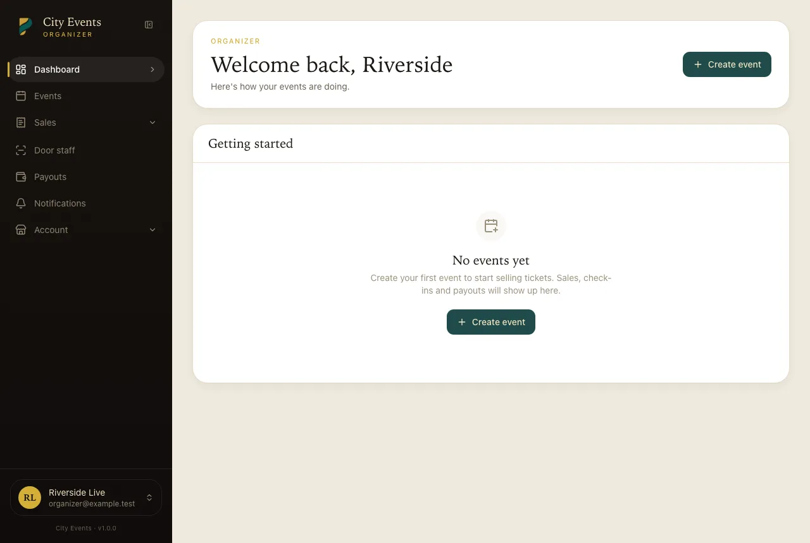
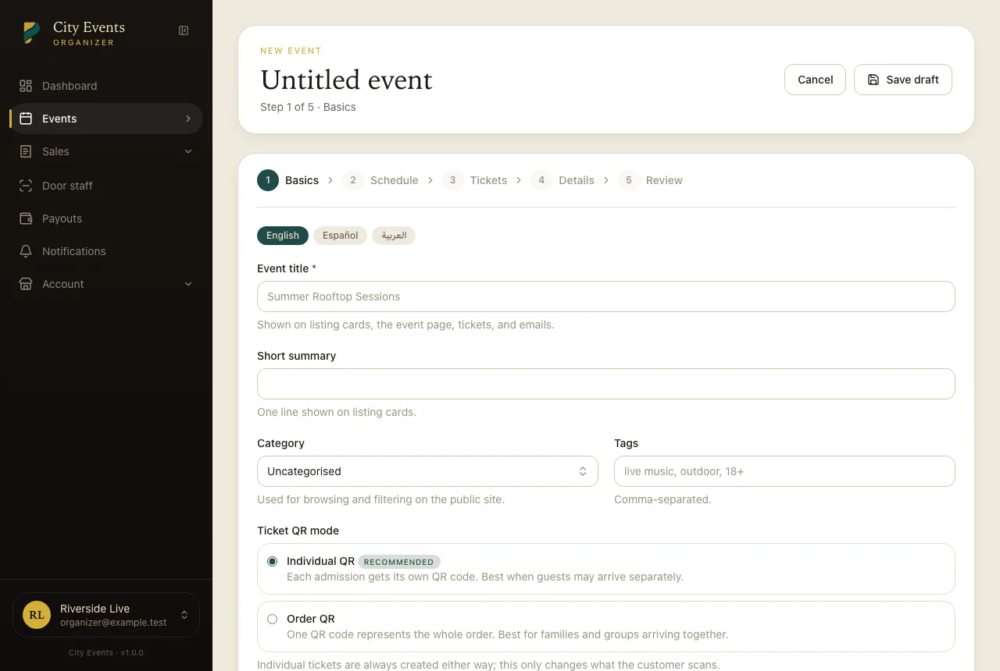

Organizer Panel Tour
What an event organizer sees — scoped entirely to their own events.
The Organizer panel (/organizer) is scoped: an organizer only ever sees their own
events, orders, and staff — never another organizer's data.
Dashboard
The same analytics as the admin Overview, covering only the organizer's own events, with the same period picker and currency switcher. It shows gross sales and their own earnings, paid orders, tickets sold, attendance, a sales trend, upcoming events with how full each one is, top events, tickets by ticket type, how their sales split into earnings, service fees and tax, and recent orders and reviews.
An At a glance card lists what they can act on: the balance available to withdraw (per currency), events waiting for approval, drafts, reviews awaiting a reply, and today's check-ins. Until they create their first event, the dashboard shows a single "Create event" prompt instead.

Events
Create and edit events — details, ticket types and pricing, venue, media, and publishing. A new or edited event goes to Pending status when submitted and needs admin approval before it's publicly visible; it doesn't go live the moment an organizer hits save.

Orders
Every order against their own events, with the ability to issue a refund on a paid order (subject to the platform's refund window setting) directly from here — the same underlying refund action an admin can also use.
Attendees
A searchable list of everyone who's bought a ticket to one of their events, with check-in status — useful for door-day headcounts without needing the scanner app open.
Coupons
Create discount codes scoped to their own events — see Coupons.
Staff
Add staff accounts (door/scanning-only access — no financial or settings visibility) and assign them to specific events for check-in duty.
Reviews
Buyer reviews left on their events — moderate/respond depending on whether auto-approval is on (a platform-wide setting; see the settings reference).
Notifications
Their own notification history/preferences — separate from the platform-wide notification templates an admin edits (see Notification templates).
Payouts
See their current available balance and request a payout against it; requests queue up for the admin to mark paid or reject. See Payouts for how the balance is calculated.
Profile / account settings
Name, email, password, two-factor authentication, and organizer profile details (bio, logo, a per-organizer commission override if one's been set for them).